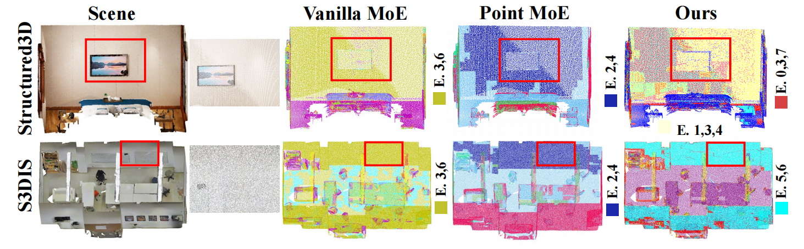
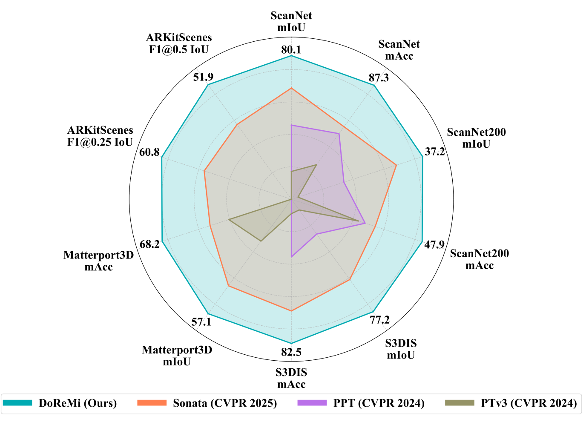
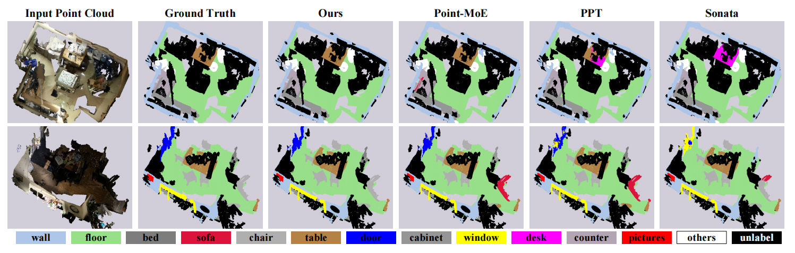
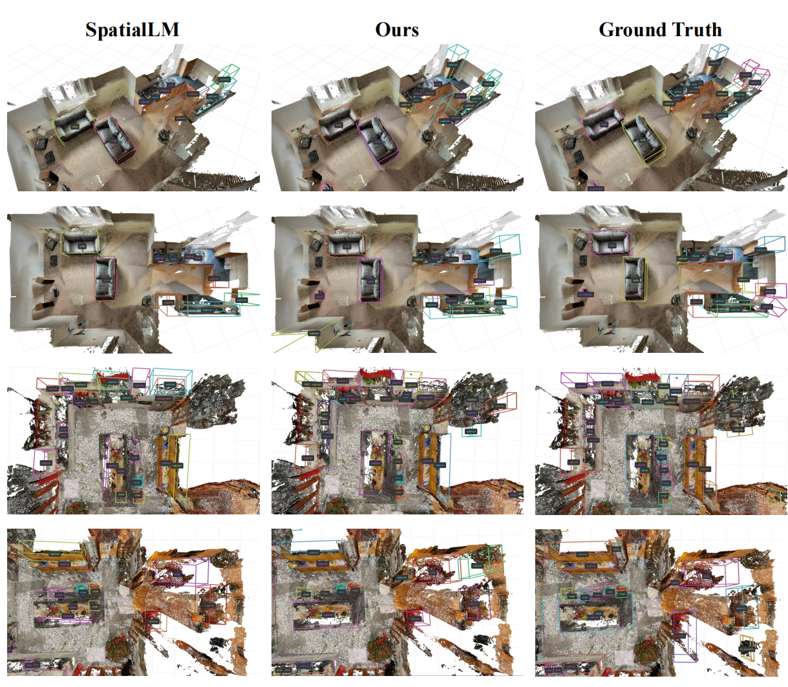
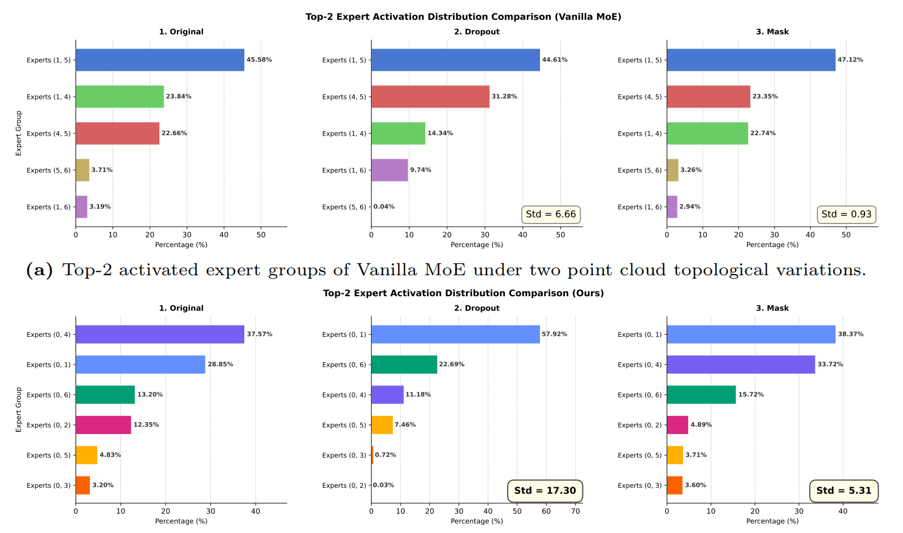
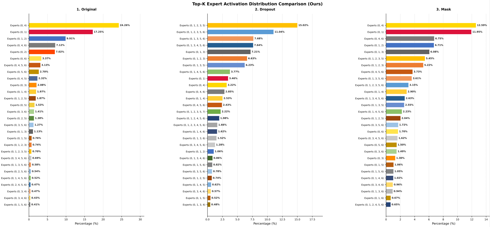

DoReMi: Bridging 3D Domains via Topology-Aware Domain-Representation Mixture of Experts
Abstract
Constructing a unified 3D scene understanding model has long been hindered by the significant topological discrepancies across different sensor modalities. While applying the Mixture-of-Experts (MoE) architecture is an effective approach to achieving universal understanding, we observe that existing 3D MoE networks often suffer from semantics-driven routing bias. This makes it challenging to address cross-domain data characterized by "semantic consistency yet topological heterogeneity." To overcome this challenge, we propose DoReMi (Topology-Aware Domain-Representation Mixture of Experts). Specifically, we introduce a self-supervised pre-training branch based on multi attributes, such as topological and texture variations, to anchor cross-domain structural priors. Building upon this, we design a domain-aware expert branch comprising two core mechanisms: Domain Spatial-Guided Routing (DSR), which achieves an acute perception of local topological variations by extracting spatial contexts, and Entropy-controlled Dynamic Allocation (EDA), which dynamically adjusts the number of activated experts by quantifying routing uncertainty to ensure training stability. Through the synergy of these dual branches, DoReMi achieves a deep integration of universal feature extraction and highly adaptive expert allocation. Extensive experiments across various tasks, encompassing both indoor and outdoor scenes, validate the superiority of DoReMi. It achieves 80.1% mIoU on the ScanNet validation set and 77.2% mIoU on S3DIS, comprehensively outperforming existing state-of-the-art methods. The code will be released soon.
Introduction Insight

Compared with vanilla MoE that tends to reuse similar experts for semantically similar objects, DoReMi adaptively changes expert combinations according to topology variations across datasets.
Results

Performance. DoReMi achieves consistent gains across indoor benchmarks, improving key metrics such as mIoU while maintaining strong generalization.

Segmentation visualization. Compared with previous methods, DoReMi yields cleaner semantic boundaries.
| Method | F1@0.25 | F1@0.5 |
|---|---|---|
| SpatialLM + Sonata | 58.9 | 49.5 |
| SpatialLM + DoReMi (Ours) | 60.8 | 51.9 |
On ARKitScenes validation, DoReMi improves multimodal detection by +1.9 at F1@0.25 and +2.4 at F1@0.5 over the Sonata-based baseline.

Detection visualization. The model captures fine-grained spatial cues more robustly, improving localization quality under cross-domain scene variations.
Expert Activation Under Topology Variations

Under dropout and mask perturbations, vanilla MoE keeps highly homogeneous top-2 activation patterns, while DoReMi shows larger distribution shifts, indicating stronger topology sensitivity and adaptive routing.

DoReMi dynamically expands from top-2 to top-k expert combinations when topology becomes more uncertain, supporting robust performance under severe structural changes.
Pretraining Strategy Comparison
| Method | 2D | 3D | mIoU | mAcc | allAcc |
|---|---|---|---|---|---|
| Sonata | ✗ | ✓ | 79.4 | 86.1 | 92.5 |
| Sonata + Ours | ✗ | ✓ | 79.7 | 87.0 | 92.8 |
| DoReMi (Ours) | ✗ | ✓ | 80.1 | 87.3 | 93.1 |
| Concerto | ✓ | ✓ | 80.7 | 87.4 | 93.1 |
| Concerto + Ours | ✓ | ✓ | 81.2 | 89.1 | 93.2 |
DoReMi is compatible with different pretraining paradigms and consistently improves performance on top of both 3D-only and joint 2D-3D pretrained representations.
BibTeX
@article{xing2025doremi,
title={DoReMi: A Domain-Representation Mixture Framework for Generalizable 3D Understanding},
author={Xing, Mingwei and Wang, Xinliang and Shi, Yifeng},
journal={arXiv preprint arXiv:2511.11232},
year={2025}
}